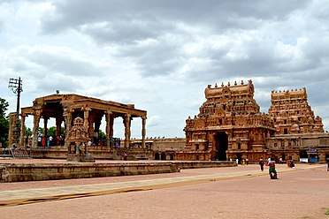
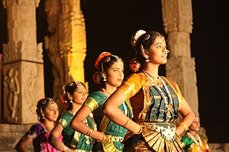
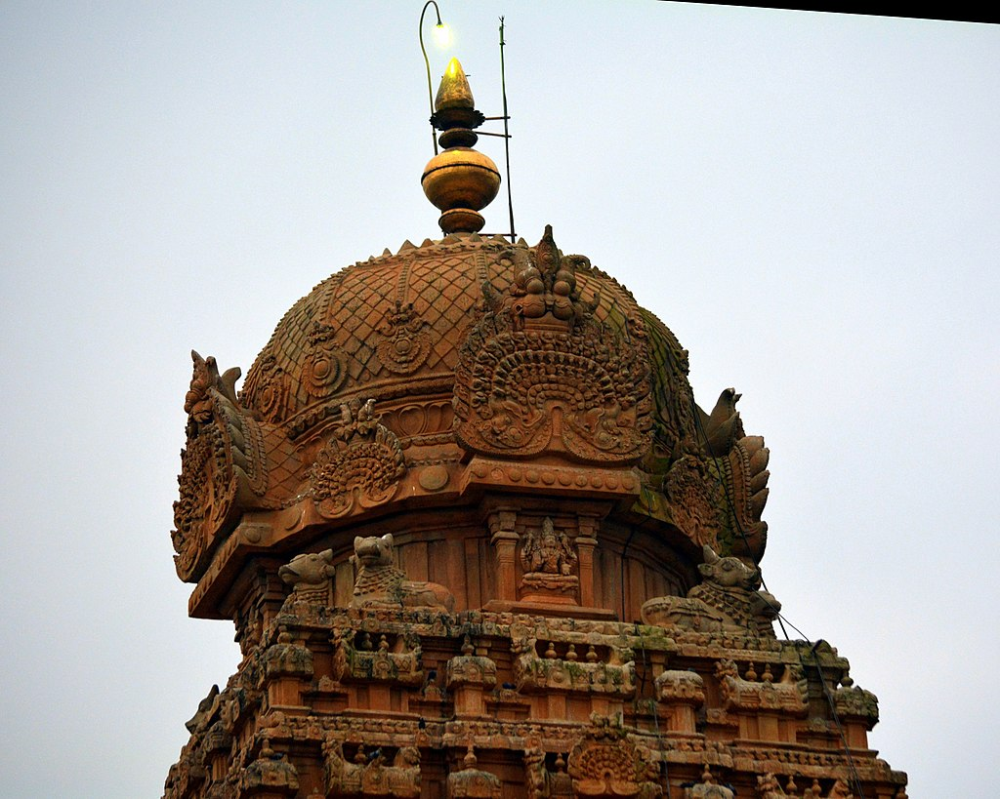
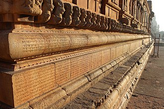

Brihadeeswarar Temple
Built using granite, the vimana tower above the shrine is one of the tallest in South India. The temple has a massive colonnaded prakara (corridor) and one of the largest Shiva lingas in India. It is also famed for the quality of its sculpture, as well as being the location that commissioned the brass Nataraja, Shiva as the lord of dance, in the 11th century. The complex includes shrines for Nandi, Parvati, Murugan, Ganesha, Sabhapati, Dakshinamurti, Chandeshvara, Varahi, Thiyagarajar of Thiruvarur, Siddhar Karuvoorar and others. The temple is one of the most visited tourist attractions in Tamil Nadu.
History
A spectrum of dravidian temple styles continued to develop from the fifth to the ninth century over the Chalukya era rule as evidenced in Aihole, Badami and Pattadakal, and then with the Pallava era as witnessed at Mamallapuram and other monuments. Thereafter, between 850 and 1280, Cholas emerged as the dominant dynasty.The early Chola period saw a greater emphasis on securing their geopolitical boundaries and less emphasis on architecture. In the tenth century, within the Chola empire emerged features such as the multifaceted columns with projecting square capitals. This, states George Michell, signaled the start of the new Chola style. This South Indian style is most fully realized both in scale and detail in the Brihadeshwara temple built between 1003 and 1010 by the Chola king Rajaraja I.
Temple personnel
An inscription on the north wall of enclosure, dated 1011 CE, gives a detailed accounts of people employed and supported by the temple.
The inscription gives their wages, roles and names. It includes over 600 names including those of priests, lamp lighters, washermen,
tailors, jewelers, potters, carpenters, sacred parasol bearers, dance gurus, dancing girls, singers, male and female musicians,
superintendents of performance artists, accountants among others.
Their wages was in parcels of land, so their temple employment was likely part-time.
The temple employed devadasis who were dancers and singers of devotional hymns.
Among its numerous inscriptions are frequent gifts that state, "to provide for worship, for food to assembly of
sannyasis (monks or ascetics) and for repairs". According to George Michell, the Thanjavur temple was a major charity institution
in its history. It provides free meal for pilgrims, devotees and wayfarers on a daily basis. On the days of Hindu festivals,
these meals were elaborate and when brahmins were particularly invited and fed.
Architecture
The Peruvudaiyar temple's plan and development utilizes the axial and symmetrical geometry rules.
It is classified as Perunkoil (also called Madakkoil), a big temple built on a higher platform of a natural or man-made mounds.
The temple complex is a rectangle that is almost two stacked squares, covering 240.79 metres (790.0 ft) east to west, and 121.92 metres
(400.0 ft) north to south. In this space are five main sections: the sanctum with the towering superstructure (sri vimana), the Nandi
hall in front (Nandi-mandapam) and in between these the main community hall (mukhamandapam), the great gathering hall (mahamandapam)
and the pavilion that connects the great hall with the sanctum (Antrala).

The temple complex integrates a large pillared and covered veranda (prakara) in its spacious courtyard, with a perimeter of about 450 metres (1,480 ft) for circumambulation.
Outside this pillared veranda there are two walls of enclosure, the outer one being defensive and added in 1777 by the French colonial forces
with gun-holes with the temple serving as an arsenal. They made the outer wall high, isolating the temple complex area. On its east end is the
original main gopuram or gateway that is barrel vaulted. It is less than half the size of the main temple's vimana. Additional structures were
added to the original temple after the 11th century, such as a mandapa in its northeast corner and additional gopurams (gateways)
on its perimeters to allow people to enter and leave from multiple locations. Some of the shrines and structures were added during the Pandya,
Nayaka, Vijayanagara and Maratha era, before the colonial era started, and these builders respected the original plans and symmetry rules.
Inside the original temple courtyard, along with the main sanctum and Nandi-mandapam are two major shrines, one for Kartikeya and for Parvati.
The complex has additional smaller shrines.
The Peruvudaiyar temple continued the Hindu temple traditions of South India by adopting architectural and decorative elements,
but its scale significantly exceeded the temples constructed before the 11th century. The Chola era architects and artisans
innovated the expertise to scale up and build, particularly with heavy stone and to accomplish the 63.4 metres (208 ft) high
towering vimana.
Nandi mandapam and the entrance gopurams, northeast view from courtyard
Another view of the entrance
The temple faces east, and once had a water moat around it. This has been filled up.
The fortified wall now runs around this moat. The two walls have ornate gateways called the gopurams.
These are made from stone and display entablature. The main gateways are on the east side.
The first one is called the Keralantakan tiruvasal, which means the "sacred gate of the Keralantakan".
The word Keralantakan was the surname of king Rajaraja who built it. About a 100 metres (330 ft) ahead is the inner courtyard gopuram called
the Rajarajan tiruvasal. This is more decorated than the Keralantakan tiruvasal, such as with its adhishthanam relief work narrating scenes
from the Puranas and other Hindu texts. The inner eastern gopuram leads to a vast courtyard, in which the shrines are all signed to east–west and north-west
cardinal directions. The complex can be entered either on one axis through a five-story gopuram or with a second access directly to the huge main quadrangle through
a smaller free-standing gopuram. The gopuram of the main entrance is 30 m high, smaller than the vimana.The main temple-related monuments and the great
tower is in the middle of this courtyard. Around the main temple that is dedicated to Shiva, are smaller shrines, most of which are
aligned axially. These are dedicated to his consort Parvati, his sons Murugan and Ganesha, Nandi, Varahi, Karuvur deva (the guru of Rajaraja Chola),
Chandeshvara and Nataraja. The Nandi mandapam has a monolithic seated bull facing the sanctum. In between them are stairs leading to a columned porch and community
gathering hall, then an inner mandapa connecting to the pradakshina patha, or circumambulation path. The Nandi (bull) facing the mukh-mandapam weighs about 25 tonnes.
It is made of a single stone and is about 2 m in height, 6 m in length and 2.5 m in width.
The image of Nandi is a monolithic one and is one of the largest in the country.
Bharathanatyam Yajna
To mark the occasion, the state government organised a Bharathanatyam Yajna, classical dance show under noted dancer Padma Subramaniam. It was jointly organised by the Association of Bharatanatyam Artistes of India (ABHAI) and the Brhan Natyanjali Trust, Thanjavur. To mark the 1000th anniversary of the building, 1,000 dancers from New Delhi, Mumbai, Pune, Tamil Nadu, Andhra Pradesh, Karnataka, Kerala, Singapore, Malaysia and the US danced in concert to the recorded 11 verses of divine music Thiruvisaippa (ninth volume of Thirumurai) composed by Karuvur deva (the guru of Rajaraja). The small town turned into a cultural hub for two days beginning 26 September 2010 as street performers and dancers performed throughout the town
top of the temple
On the second floor, Shiva's Tripurantaka form in different postures is depicted corresponding to these sculptures.

Above these floors, the sri-vimana towers above in thirteen storeys (talas). Above these storeys is a single square block
of granite weight 80 tons, and 7.77 metres (25.5 ft) side. On top of this block, at its corners are Nandi pairs each about
1.98 metres (6 ft 6 in) by 1.68 metres (5 ft 6 in) in dimension. Above the center of this granite block rises the griva, the
sikhara and the finial (stupi) of Tamil Hindu temple architecture. This stupi is 3.81 metres (12.5 ft) in height, and was
originally covered with gold (no longer).
The sikhara at the top is cupola-shaped and weighs 25 tons. Each storey o
f this tower is decorated with kutas and salas. The shrinking squares tower architecture of this temple differs from
the tower at the Chola temple at Gangaikondasolisvaram, because this is straight in contrast to the latter which is
curvilinear. The temple's sri-vimana magnitude has made it a towering landmark for the city.
The upper storey corridor wall of the aditala is carved with 81 of the 108 dance karanas – postures of Natya Sastra.
This text is the basis of the Bharathanatyam, the classical dance of Tamil Nadu. The 27 unrepresented karanas are blank
blocks of stone, and it is unclear why these were not carved. The 81 postures carved suggest the significance of this classical Indian dance form by early 11th century.
The garbhagriha is square and sits on a plinth. This is moulded and 0.5 metres (1 ft 8 in) thick. It consists of upapitham and adhishthanam,
respectively 140 cm and 360 cm thick.
raja raja chola
Rajaraja I (Middle Tamil: Rājarāja Cōḻaṉ; Classical Sanskrit: Rājarāja Śōḷa; 947 CE – 1014 CE),[1][2] often described as Rajaraja the Great, was a Chola emperor who reigned the southern parts of India from 985 CE to 1014 CE. An iconic
figure and often regarded as the 'King of Kings', he was the most powerful emperor in India during his reign and is remembered for reinstating the Chola influence and ensuring its supremacy across the Indian Ocean.
The southern part of India was united for the very first time in the Indian history under his rule.
His extensive empire included vast regions of the Pandya country, the Chera country and northern Sri Lanka. He also acquired Lakshadweep and Thiladhunmadulu atoll, and part of the northern-most islands of
the Maldives in the Indian Ocean. Campaigns against the Western Gangas and the Western Chalukyas extended the Chola authority as far as the Tungabhadra River. On the eastern coast, he battled with the Telugu Chola king Jata Choda Bhima for the possession of Vengi.
Rajaraja I, being an able administrator, also built the great Rajarajeshwaram Temple at the Chola capital Thanjavur.
The temple is regarded as the foremost of all temples constructed in the medieval south Indian architectural style.
During his
reign, the texts of the Tamil poets Appar, Sambandar and Sundarar were collected and edited into one compilation called Thirumurai,
gaining him the name of 'Thirumurai Kanda Cholar' meaning The One Whom Found Thirumurai.[6][10] He initiated a massive project of land survey
and assessment in 1000 CE which led to the reorganisation of Tamil country into individual units known as valanadus.
Rajaraja died in 1014 CE and was succeeded by his son Rajendra Chola I.
Inscriptions
The temple walls have numerous inscriptions in Tamil and Grantha scripts. Many of these begin with customary Sanskrit and Tamil language historical introduction to the king who authorized it, and predominant number of them discuss gifts to the temple or temple personnel, in some cases residents of the city.[46][47] The temple complex has sixty four inscriptions of Rajaraja Chola I, twenty nine inscriptions of Rajendra Chola I, one each of Vikrama Chola, Kulottunga I and Rajamahendra (Rajendra II), three of a probable Pandyan king, two of Nayaka rulers namely, Achyutappa Nayaka and Mallapa Nayaka